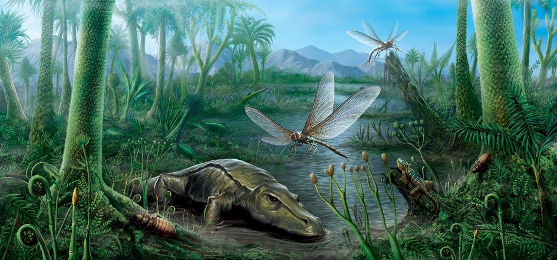

El Carbonífero es el quinto sistema y período del Paleozoico en la escala temporal geológica. Sucede al Devónico y precede al Pérmico. Duró unos 60 millones de años, comenzando hace unos 359 millones de años y acabando hace unos 299 millones de años. El nombre carbonífero significa «portador de carbón» y deriva de las palabras latinas carbō ('carbón') y ferō ('lleva', 'porta'), y fue acuñado por los geólogos William Conybeare y William Phillips en 1822, basándose en un estudio de las rocas británicas, y refleja el hecho de que muchas capas de carbón se formaron a nivel mundial durante ese tiempo.
En Estados Unidos subdividen el Carbonífero en Pensilvánico y Misisípico, subdivisiones que fueron adoptadas por la Comisión Internacional de Estratigrafía formalmente como subsistemas y subperiodos del Carbonífero en la escala cronoestratigráfica internacional. En Europa existen dos subdivisiones, la europea occidental y la rusa, siendo ambas de difícil correlación entre ellas con la estadounidense.
Se caracteriza porque grandes extensiones de bosques quedaron sucesivamente sepultadas, en lo que se conoce como colapso de la selva tropical del Carbonífero, dando origen a estratos de carbón. Mientras continúan extinguiéndose los peces primitivos, se expanden los cartilaginosos y óseos. Los anfibios invaden la tierra firme y comienzan su desarrollo los reptiles, que durante el período Jurásico tendrán su clímax. En el Carbonífero Superior abundan los insectos, algunos muy grandes, como las "libélulas" de casi sesenta centímetros con alas extendidas, y árboles de hasta 40 m, como el Lepidodendron. Esto se explica por la alta concentración de oxígeno en la atmósfera, que según estimaciones llegó a alcanzar el 35 % (actualmente es del 21 %).
El Carbonífero es una época de la historia de la Tierra muy activa desde el punto de vista tectónico. Durante este periodo se produce la orogenia hercinica o varisca que da lugar a la formación del megacontinente Pangea. Climáticamente terminó con una glaciación, durante la cual los glaciares se extienden por todo el centro y sur de Pangea.